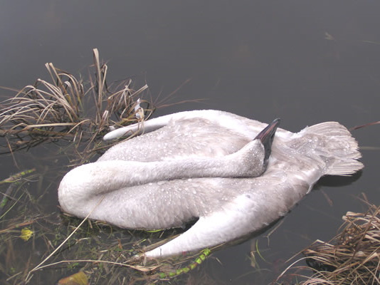
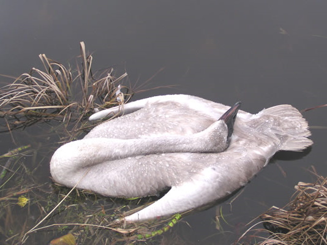

You may have heard the story: countless Trumpeter Swans are suffering and dying each year from ingesting toxic lead hunting shot. Nowhere is this occurrence more evident than Judson Lake, a lead shot polluted water body straddling the Canada/USA international border in Abbotsford, British Columbia and Whatcom County Washington.
For decades duck hunters have blasted toxic lead shot into the floor of Judson Lake. Tragically, each winter, countless unsuspecting Trumpeter Swans needlessly die from ingesting the lead shot, thinking it is grit (small stones) needed to help digest their food.
Over 2,000 Trumpeter Swans have died of lead poisoning at and near Judson Lake over the past several years.
Keeping the swans from using Judson Lake the past two winters (2006 - 2008), although done imperfectly, has coincided with a 75% decrease in Trumpeter Swan mortalities near the Canada/US border since 2004 (We've gone from back to back winters of approximately 400 local mortalities down to two consecutive winters with only 100).
Despite the fact that Judson Lake completely dries up each summer, providing the perfect opportunity to remove the lead shot, the Canadian Wildlife Service (CWS) and US Government Wildlife Agencies have not allowed the clean up and restoration of this blatant death trap.
Over 50 of the dead swans that were examined in recent winters contained more than 100 lead pellets in their gizzards. “The mortalities containing more than 100 pellets were nearly all collected at Judson Lake (spanning the US/Canada border)” (WDFW, 2005).
Only 7 swans that were known to be lead-free when they were captured and fitted with radio collars, and which subsequently died between 2001 and 2004, were confirmed to have died of lead poisoning. "Of these 7 lead-poisoned swans 6 visited Judson Lake (86%)”(Environment Canada, May 31, 2005).
*None of these swans were captured and collared at Judson Lake.
 
This section contains graphical content of deceased swans which may not be suitable for all audiences. To view the images anyway, click or tap this section.